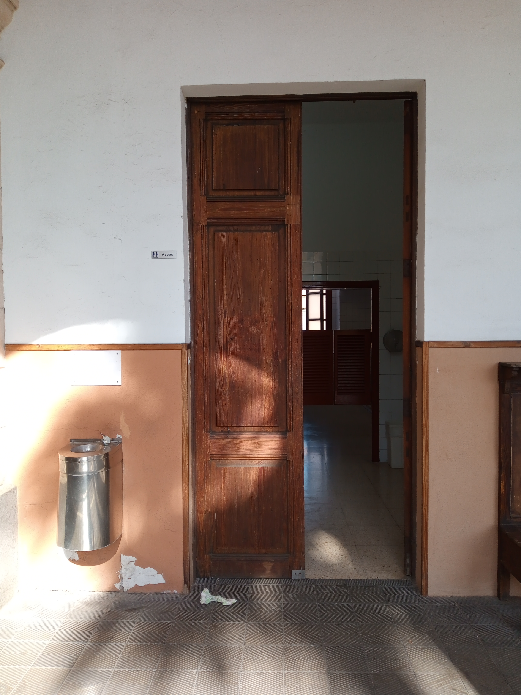
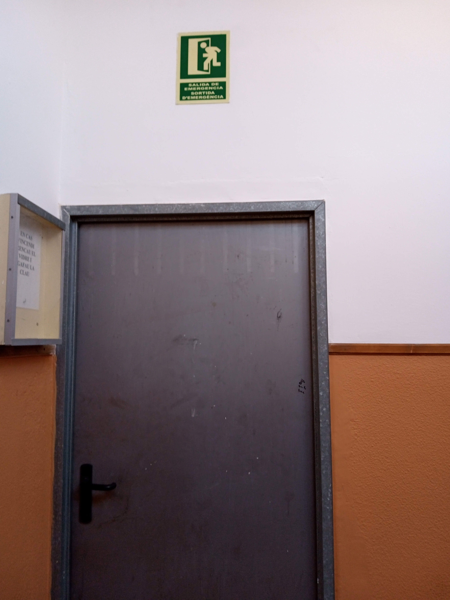
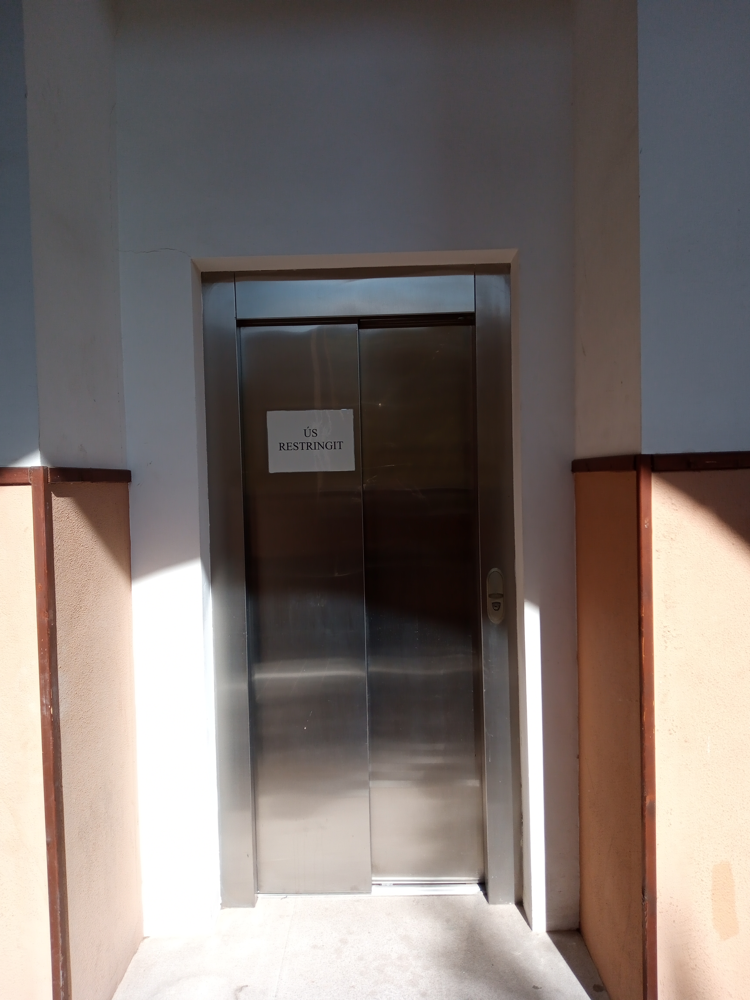
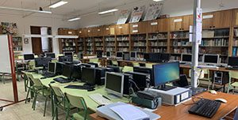
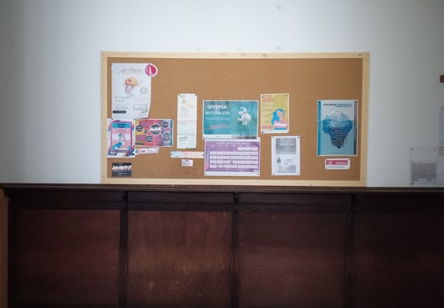

<!DOCTYPE html>
<html lang="ca">

</html>
<html>

<head>
  <meta name="viewport" content="width=device-width, initial-scale=1.0" />
  <link href="https://cdn.jsdelivr.net/npm/bootstrap@5.0.2/dist/css/bootstrap.min.css" rel="stylesheet"
    integrity="sha384-EVSTQN3/azprG1Anm3QDgpJLIm9Nao0Yz1ztcQTwFspd3yD65VohhpuuCOmLASjC" crossorigin="anonymous">
  <script src="https://cdn.jsdelivr.net/npm/bootstrap@5.0.2/dist/js/bootstrap.bundle.min.js"
    integrity="sha384-MrcW6ZMFYlzcLA8Nl+NtUVF0sA7MsXsP1UyJoMp4YLEuNSfAP+JcXn/tWtIaxVXM"
    crossorigin="anonymous"></script>


</head>


<body>
  <div class=" p-5 bg-primary text-white">
    <h1>IES RAMON LLULL</h1>
    <h2>PRIMERA PLANTA</h2>
  </div>

  <div style="overflow: auto">
    <div class="menu">
      <div><a href=""></a></div>
      <div class="menuitem" style="margin-top: 7px">
        <a href="index.html">Inici</a>
      </div>
      <div class="menuitem"><a href="#Banys">Banys</a></div>
      <div class="menuitem">
        <a href="#Sortida d'emergència">Sortida d'emergència</a>
      </div>
      <div class="menuitem"><a href="#Ascensor">Ascensor</a></div>
      <div class="menuitem"><a href="#Biblioteca">Biblioteca</a></div>
      <div class="menuitem">
        <a href="#Tauler d'anuncis">Tauler d'anuncis</a>
      </div>
      <div class="menuitem">
        <a href="#Departament de GEO i història">Departament de GEO i història</a>
      </div>
      <div class="menuitem">
        <a href="#Departament de matematiques">Departament de matematiques</a>
      </div>
      <div class="menuitem">
        <a href="#Departament de flosofia">Departament de filosofia</a>
      </div>
      <div class="menuitem">
        <a href="#Departament de llatin i grec">Departament de llatin i grec</a>
      </div>
    </div>

    <div class="container mt-4">
      <h2>Ramon llull</h2>
      <p>
        Aquest institut porta impartint classes des de ja fa 100 anys, sent
        aquest l'institut més antic de mallorca i amb més prestigi
      </p>
      <div class="menuitem">
        <iframe width="190px" src="https://www.youtube.com/embed/XVBSX37NjE4" title="YouTube video player"
          frameborder="0"
          allow="accelerometer; autoplay; clipboard-write; encrypted-media; gyroscope; picture-in-picture"
          allowfullscreen></iframe>
      </div>
      <h2>Aules</h2>
      <p>
        En aquest pis es troben aules diverses, on es fa classe per a ESO i
        batxillerats
      </p>
      <p>
        <a href="http://www.iesramonllull.net/">
          Pàgina oficial del centre
        </a>
      </p>


      <h2 id="Banys">Banys</h2>
      <p>Aquests són els banys que hi ha la mà esquerra, són banys mixtos.</p>
      


      <h2 id="Sortida d'emergència">Sortida d'emergència</h2>
      <p>
        La sortida d'emergència d'aquesta planta es troba la mà esquerra fins
        el tauler d'anuncis després a la dreta i pel passadís de ziquerda fins
        al fons, a prop del departament de filosofia.
      </p>
      


      <h2 id="Ascensor">Ascensor</h2>
      <p>
        L'ascensor per accedir a la 2a planta i la planta baixa aquesta a
        l'esquerra, passant el departament de matemàtiques a la cantonada del
        passadís.
      </p>
      


      <h2 id="Biblioteca">Biblioteca</h2>
      <p>
        La biblioteca es troba la mà esquerra a final de passadís, allà es
        troba una col·lecció de llibres variats des de literatura fins a
        llibres més acadèmics, a més trobaràs ordinadors per a l'ús públic,
        usant el teu usuari de l'institut, on tindràs la teva carpeta i un
        escriptori personal.
      </p>
      <p>
        Per a més informació, pots visitar la
        <a href="http://biblioteca.iesramonllull.net/">
          web de la biblioteca.
        </a>
      </p>
      


      <h2 id="Tauler d'anuncis">Tauler d'anuncis</h2>
      <p>
        Aquí es penjaran anuncis, activitats i xerrades que es realitzen
        durant aquest any escolar, també hi haurà anuncis de venda i compra de
        llibres de segona mà per als alumnes, a més també hi ha més taulers a
        la palnata baixa de l'institut.
      </p>
      


      <h2>Departaments</h2>
      <p>
        Es tracta de aules on es reuneixen els mestres de certes assignatures, per a una junta
        d'aquesta matèria, a més serveix com a aula normal per dictar classes,
        també per guardar material d'aquesta matèria.
      </p>

      <ul>

        <li>Departament de GEO i història</li>
        <li>Departament de matematiques</li>
        <li>Departament de flosofia</li>
        <li>Departament de llatin i grec</li>

    </div>
  </div>

  <div style="
        background-color: #b1d1e9;
        text-align: center;
        padding: 10px;
        margin-top: 7px;
        font-size: 12px;
      ">
    <a href="http://www.iesramonllull.net/"> Pàgina oficial del centre </a>
  </div>
</body>

</html>